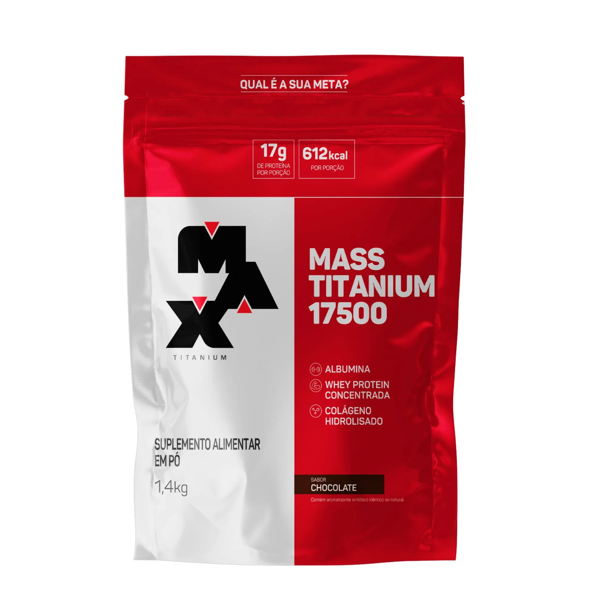
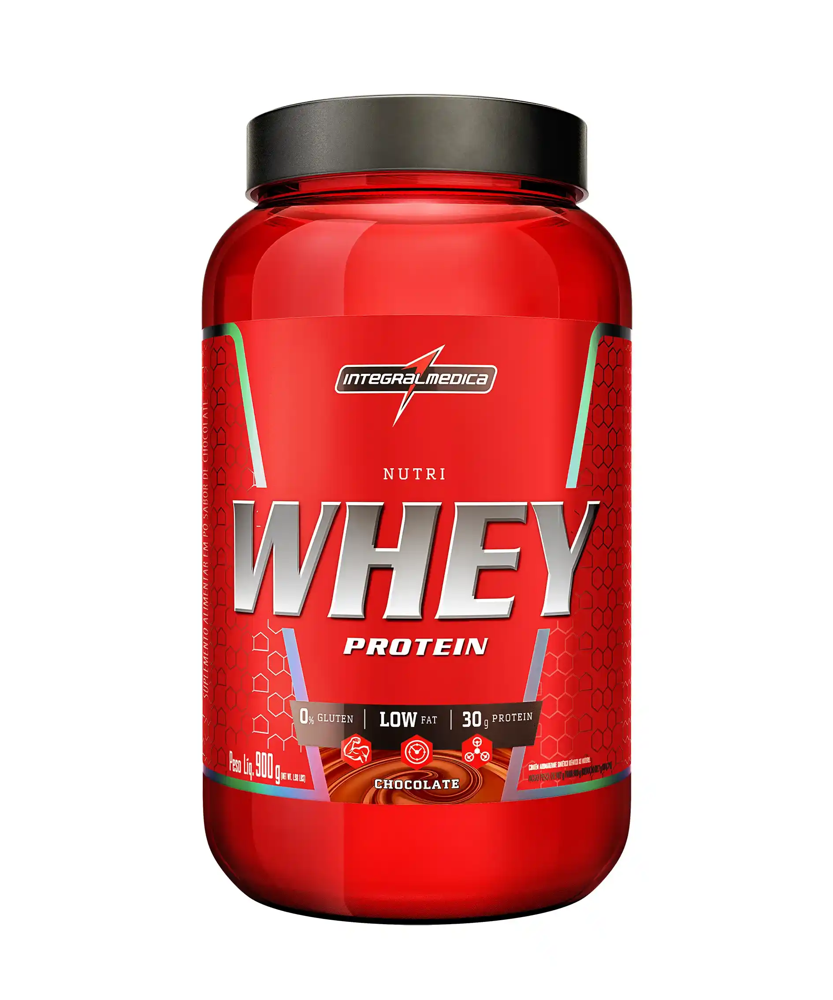

Descubra nossa seleção de Whey Protein, o suplemento ideal para quem busca aumentar a massa muscular e melhorar a recuperação pós-treino.
O Whey Protein é um suplemento proteico de alta qualidade, ideal para quem busca aumentar a massa muscular e melhorar a recuperação pós-treino. Disponível em diversas opções de sabores, é uma excelente fonte de proteína de rápida absorção.
Whey Protein Probiotica
O Whey Protein Probiotica é uma das melhores opções do mercado, oferecendo uma combinação de proteínas de alta qualidade e aminoácidos essenciais. É perfeito para atletas e pessoas que desejam melhorar seu desempenho físico.
Características:
Proteína de soro de leite concentrada e isolada
Rico em BCAAs e glutamina
Baixo teor de carboidratos e gorduras
Disponível em diversos sabores deliciosos
Benefícios:
Ajuda na construção muscular
Melhora a recuperação pós-treino
Aumenta a saciedade
Contribui para a saúde imunológica
R$ 129,90
Whey Protein Max Titanium
O Whey Protein Max Titanium é uma excelente escolha para quem busca um suplemento de alta qualidade. Com uma fórmula rica em proteínas e aminoácidos, é ideal para auxiliar na recuperação muscular e no ganho de massa magra.
Características:
Proteína de soro de leite isolada
Rico em BCAAs e glutamina
Sem adição de açúcares
Disponível em sabores variados
Benefícios:
Promove o aumento da massa muscular
Melhora a recuperação após treinos intensos
Auxilia na manutenção do peso corporal
Contribui para a saúde geral do organismo
R$ 149,90

Whey Protein Integralmedica
O Whey Protein Integralmedica é uma opção de alta qualidade, ideal para quem
busca um suplemento proteico eficaz. Com uma fórmula balanceada, é perfeito para auxiliar na construção muscular e na recuperação pós-treino.
Características:
Proteína de soro de leite concentrada
Rico em aminoácidos essenciais
Baixo teor de gorduras e carboidratos
Disponível em diversos sabores agradáveis
Benefícios:
Auxilia no ganho de massa muscular
Melhora a recuperação muscular
Aumenta a saciedade e controla o apetite
Contribui para a saúde óssea e imunológica
R$ 119,90

Whey Protein Max titanium
O Whey Protein Max Titaniun é uma excelente opção para quem busca um suplemento de alta qualidade. Com uma fórmula rica em proteínas e aminoácidos, é ideal para auxiliar na recuperação muscular e no ganho de massa magra.